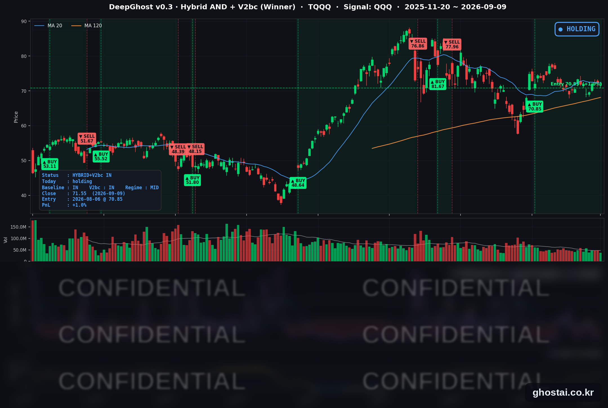

👻 매일 시그널과 히스토리를 홈페이지에서 한눈에 → www.ghostai.co.kr
회원 페이지 안내 — 회원 가입하시면 바로 신청하실 수 있습니다. 선착순 100명을 모집하고 있습니다. 회원 페이지는 블로그·유튜브보다 먼저 업데이트되며, AI가 생성한 신호를 공개하고 분석 레포트를 함께 제공합니다. 가입은 이메일과 필명만으로 가능하고, 서비스 사용료는 받지 않습니다. 운영자 승인 후 이용하실 수 있습니다.
브렌트유가 넉 달 만에 100달러를 넘었고, 10년물 금리는 약 3년 만의 최고 종가로 올라섰습니다.
📊 오늘의 매매 신호
| 항목 | 내용 |
|---|---|
| 오늘 할 일 | ✅ 아무것도 안 해도 됩니다 |
| 포지션 상태 | 📈 TQQQ 보유 중 (IN POSITION) |
| 매수 진입일 | 2026-08-06 (24거래일째) |
| 진입가 → 현재가 | $70.85 → $71.55 |
| 현재 포지션 수익 | +0.99% |
TQQQ 시그널 — IN POSITION
현재 상태: 매수 포지션 유지 중 | 이번 포지션 수익률 +0.99%

나스닥100(QQQ)이 -0.29%, TQQQ는 -0.85% 마감했습니다. 전략의 평가손익은 전 거래일 +1.85%에서 +0.99%로 줄었습니다. 8월 6일 진입 이후 24거래일째 보유 상태이고, TQQQ 쪽에서 새로 발생한 매매 신호는 없습니다.
QQQ가 주요 지수 가운데 가장 덜 내린 데에는 META(+6.55%) 한 종목의 기여가 큽니다. 지수 등락률만 보면 완만한 하루였지만, S&P 500 구성종목의 중앙값은 -0.88%로 지수보다 훨씬 나빴습니다. 모델이 보는 것은 지수가 아니라 종목별 데이터이므로, 이런 날에는 지수 낙폭보다 큰 압력이 신호 쪽에 들어옵니다.
오늘 미국 시장 — 시황 요약
지수 마감
| 지수 | 종가 | 등락률 |
|---|---|---|
| S&P 500 | 7,636.36 | -0.48% |
| 나스닥 종합 | 26,253.34 | -0.64% |
| 다우존스 | 52,380.66 | -0.77% |
| 러셀 2000 | 2,921.23 | -1.32% |
| QQQ (나스닥100) | 716.31 | -0.29% |
| TQQQ | 71.55 | -0.85% |
세 지수 모두 3거래일 연속 하락입니다. 서열은 소형주가 가장 약하고 나스닥100이 가장 강한 형태였는데, 3년 만의 높은 금리에 조달비용이 무거운 소형주가 먼저 반응한 결과입니다.
종목 단위는 지수보다 훨씬 나빴습니다. S&P 500 구성종목 497개 중 399개가 내렸고 오른 종목은 98개였습니다. 상승 비율 19.7%는 9월 3일 67.0% → 9월 4일 34.0% → 9월 8일 28.8%에 이어 나흘 연속 줄어든 수치입니다. 지수가 -0.48%인데 중앙값 종목이 -0.88%라는 것은 시가총액 상위 소수 종목이 지수를 떠받쳤다는 뜻입니다.
하락은 개장 갭보다 장중에서 더 많이 나왔습니다. S&P 500은 갭 -0.17%에 시가→종가 -0.32%, 러셀 2000은 갭 -0.27%에 시가→종가 -1.04%였습니다. 장이 열린 뒤 유가가 계속 오르면서 매도세가 이어졌다는 뜻입니다.
국채 금리 동향
| 만기 | 수익률 | 전 거래일 대비 |
|---|---|---|
| 3개월 | 3.805% | +3.0bp |
| 5년 | 4.614% | +4.1bp |
| 10년 | 4.837% | +3.1bp |
| 30년 | 5.286% | +2.2bp |
하루 변화폭은 2~4bp로 크지 않았지만 레벨이 문제였습니다. 10년물 4.837%는 2023년 10월 31일 이후 가장 높은 종가이고, 5년물 4.614%도 2025년 1월 13일 이후 최고치입니다. 장단기 스프레드(10년−3개월)는 +103.2bp로 정상 커브를 유지했고, 오늘도 커브 중간(5~10년) 구간이 가장 많이 올랐습니다.
경기 기대가 아니라 물가 경로 조정입니다. 8월 3일 이후 브렌트유가 21% 오르는 동안 10년물은 15bp 올랐고, 두 자산의 일간 변화 상관은 +0.73이었습니다.
연준 발언 & 금리 패스
9월 5일(토)부터 9월 17일(목)까지 FOMC 블랙아웃입니다. 오늘 위원 발언은 없었고 회의 전까지도 없습니다.
발언이 없는 구간이라 금리 경로 조정은 지표와 유가가 담당합니다. 9월 인상 확률은 60% 안팎에서 유지되고 있습니다. 시장이 인상 쪽으로 기울었으나 확신은 아니라는 뜻입니다. 회의 전 남은 재료는 9월 10일(목) 8월 PPI와 9월 11일(금) 8월 CPI 둘뿐입니다. FOMC는 9월 15~16일이며 경제전망요약(SEP)이 함께 나옵니다.
오늘의 핵심 이슈
-
브렌트유가 100달러를 넘었습니다. 브렌트는 101.63달러(+3.79%)로 5월 22일 이후 처음 100달러 위에서 마감했고 WTI도 96.67달러(+3.91%)까지 올랐습니다. 미군이 오만만과 카르그섬 인근에서 이란 유조선 5척을 격침하고 이란이 요르단 미군기지와 선박 10척을 공격하면서 호르무즈 해협의 공급 불안이 다시 커졌습니다. 수요 쪽에서는 중국의 원유 매입이 여름 저점 하루 600만 배럴에서 1,000만 배럴로 늘어난 것이 더해졌습니다.
-
금리가 3년 만의 최고 종가로 올라섰습니다. 유가가 곧바로 금리로 넘어와 10년물이 4.837%를 기록했습니다. 재무부가 장기물 유동성 지원 바이백을 평소의 세 배인 60억 달러로 키워 금리 상승을 막으려 했지만, 시장이 기대한 70~80억 달러에 못 미치면서 발표 후에도 금리는 계속 올랐습니다. 지금 금리를 움직이는 것이 수급이 아니라 물가 전망이라는 것을 보여준 장면입니다.
-
같은 뉴스가 META와 알파벳을 반대 방향으로 움직였습니다. META는 온라인 쇼핑·항공권 예약·일정 관리를 대신하는 개인용 AI 에이전트 Muse를 공개하며 +6.55% 올랐습니다. 무료 등급 외에 월 20달러·100달러 유료 구독을 함께 내놓은 것이 핵심으로, AI 설비투자를 처음으로 직접 매출에 연결하는 시도입니다. 미즈호는 "주가에 반영되지 않은 실질적 제품 사이클의 시작"이라고 평가했고 키뱅크는 목표주가 780달러를 유지했습니다. 반대편에서 알파벳은 검색·어시스턴트 경쟁 부담에 광고 규제 우려가 겹치며 -2.28%로 커버리지 최대 하락 종목이 됐습니다.
변동성 & 투자심리
VIX는 16.46(+4.71%)으로 이틀 연속 올랐습니다. 다만 절대 레벨은 최근 60거래일 중 24번째로 높은 정도이고, 7월 29일 고점 20.66과는 거리가 있습니다. 하루 종일 매도가 이어졌는데도 헤지 수요가 크게 붙지는 않았습니다.
공포탐욕지수는 42로 Fear 구간입니다. 일주일 전 52(중립), 한 달 전 59(탐욕)에서 계속 내려왔습니다.
정리하면 비관 쪽으로 기운 중립입니다. 지수 낙폭은 완만하지만 상승 종목 비율이 나흘 연속 줄었고 심리 지표도 탐욕 → 중립 → 공포로 이동했습니다. VIX가 16대에 머무는 것은 시장이 이번 하락을 유가·금리 재료에 따른 조정으로 볼 뿐 시스템 위험으로 보지는 않는다는 뜻입니다.
매크로 & 원자재
| 품목 | 종가 | 등락률 |
|---|---|---|
| WTI 원유 | $96.67 | +3.91% |
| Brent 원유 | $101.63 | +3.79% |
| 금 선물 | $4,447.20 | +1.21% |
| 금 ETF (GLD) | $403.35 | +0.91% |
| 원유 ETF (USO) | $149.97 | +2.70% |
WTI와 브렌트 모두 최근 60거래일 최고 종가입니다. 어제와 달리 오늘은 금도 함께 올랐습니다. 지정학 위험이 커지면서 안전자산 수요가 붙은 형태입니다.
주요 종목 동향
| 종목 | 종가 | 등락률 | 비고 |
|---|---|---|---|
| META | 653.69 | +6.55% | AI 에이전트 Muse 공개 + 월 20/100달러 유료 구독. 갭 +5.73%, 장중 +0.78% |
| MU | 1,027.77 | +2.75% | 갭 없이 장중에만 +2.84%. DRAM 계약가 인상 기대 지속 |
| INTC | 106.24 | +1.69% | 갭 -1.57%로 밀렸다가 장중 +3.31% 회복. 이틀 연속 상승 |
| QCOM | 176.40 | +1.33% | 장중 고가 180.86까지 올랐다가 상승폭 일부 반납 |
| TSLA | 367.81 | -0.10% | 전 거래일 +3.98% 뒤 보합. 지수 대비로는 상대적으로 강했습니다 |
| AAPL | 315.34 | -0.28% | 아이폰 18 프로(1,199달러)·첫 폴더블 iPhone Duo(2,000달러) 공개. 장중 309.90~319.15로 흔들린 뒤 제자리 |
| MSFT | 491.65 | -0.47% | 개별 재료 없이 지수와 함께 하락 |
| NVDA | 223.67 | -0.91% | 이틀 연속 하락. 메모리 강세에 동참하지 않았습니다 |
| NFLX | 76.03 | -0.96% | 9월 4일 대비 -8.03%로 커버리지 중 5거래일 낙폭 최대 |
| AVGO | 364.38 | -1.13% | 전 거래일 +2.98% 되돌림 |
| AMZN | 252.40 | -1.78% | 갭 -1.50%. 소비·물류에 유가 상승이 직접 부담 |
| GOOGL | 330.65 | -2.28% | META Muse 경쟁 부담 + 광고 규제 우려. 갭 -1.97%로 대부분 개장 전 반영 |
반도체가 한 방향이 아니었습니다. 메모리·CPU(MU·INTC·QCOM)는 올랐고 GPU(NVDA)는 내렸습니다. 어제 AI 하드웨어가 함께 오르던 구도와 달리, 오늘은 하드웨어 안에서도 갈렸습니다.
애플은 전형적인 재료 소진 하루였습니다. 신제품 공개일에 장중 2.93% 폭으로 흔들렸지만 종가는 -0.28%로 사실상 제자리였습니다. 폴더블 iPhone Duo가 빨라야 10월 출시로 알려지면서 매출 기여 시점이 늦춰진 점이 상승을 제한한 것으로 보입니다.
다음 거래일 일정
- 9월 10일(목) 8월 PPI — 유가 상승이 생산자물가에 먼저 나타나는 구간이라 헤드라인과 근원의 괴리가 관전 포인트입니다.
- 9월 11일(금) 8월 CPI — 블랙아웃 중이라 9월 인상 확률을 움직일 마지막 재료입니다.
- 9월 15~16일 FOMC + SEP — 유가가 100달러 위에 머무는지 여부가 금리와 지수 양쪽의 방향을 좌우합니다.
- 애플 아이폰 18 프로 사전주문이 9월 12일(토), 출시가 9월 18일(금)로 예고됐고 iOS 27은 9월 14일(월) 배포 예정입니다.
Ghost.AI — Quantitative AI Investment
Model: DeepGhost v0.3 | Transformer-Based Deep Learning
Coverage: 13 tickers | Updated every trading day after US market close
⚠️ 본 자료는 정보 제공 목적으로만 작성되었으며 투자 권유가 아닙니다. 모든 투자의 책임은 투자자 본인에게 있습니다. 과거 성과가 미래 수익을 보장하지 않습니다.
[유의사항]
- 본 서비스는 불특정 다수를 대상으로 발행되는 단방향 정보 제공 서비스이며, 투자자 개인의 재산 상황·투자 목적·위험 선호도를 반영한 개별 투자 조언이 아닙니다.
- 고스트에이아이 주식회사는 고객과 쌍방향 의사소통(개별 상담, 맞춤형 자문 등)을 제공하지 않습니다.
- 본 콘텐츠는 투자 권유 또는 매매 주문의 청약·청약의 권유에 해당하지 않으며, 최종 투자 판단 및 그에 따른 손익의 책임은 전적으로 투자자 본인에게 있습니다.
고스트에이아이 주식회사